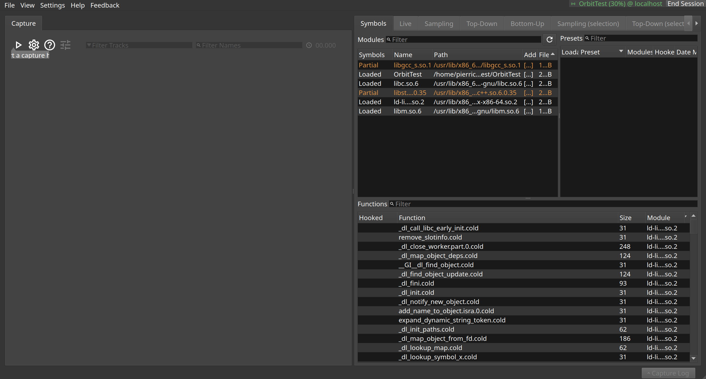

The main window
Where everything else in this manual is reached from: the capture window on the left, the analysis tabs on the right.
Orbit opens on a target it is already connected to. The left half is the capture window, which is empty until a capture has been taken. The right half is where a capture is taken apart afterwards, one tab per way of looking at it.
The toolbar above the capture window holds the capture button, the two filter boxes and the capture timer. The title bar names the process being profiled.
